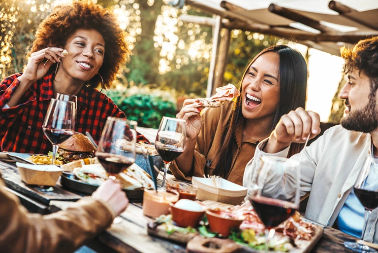
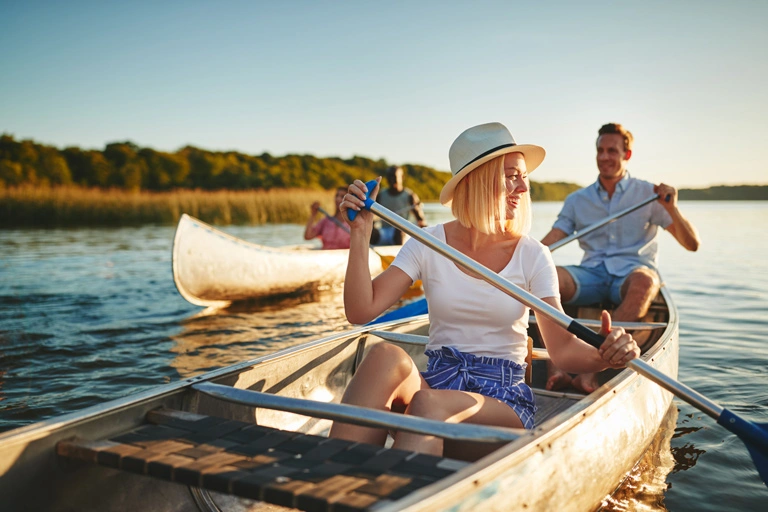
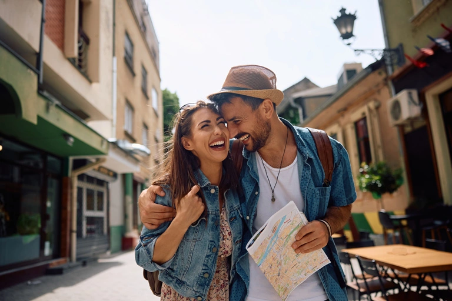
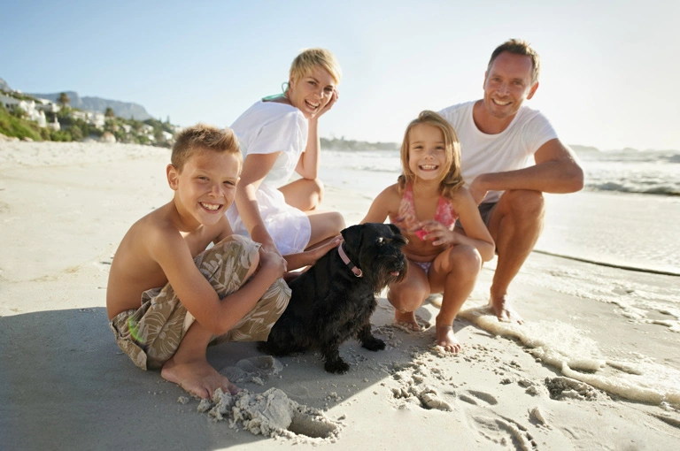

[javascript protected email address]
[javascript protected email address]
Tourism-Discover Florida Beyond the Expected
500+ Destinations with Beaches & Beyond in Florida
Embrace Florida's famous attractions and local secrets alike. Start your journey at iconic spots like world-class theme parks or white-sand beaches, but don't stop there. Venture off the beaten path to discover a family-run barbecue joint or a quiet art gallery in a sleepy coastal town. Spend one day zip-lining through a cypress forest and the next strolling a Cuban market district alive with music and mouthwatering aromas.
- 
Food-Explore Hidden Culinary Treasures
500+ Food Spots with Global & Local Flavors Across in Florida
Wander freely and stumble upon great restaurants, craft breweries, and sweet shops loved by locals. Skip the planning and endless scrolling - just follow your curiosity and appetite. Whether you're a local or just visiting, you'll find a warm welcome and a new favorite spot when you least expect it. From funky food trucks to tucked-away bakeries, Florida is brimming with hidden delights around every corner.
- 
Adventure-Unleash Your Adventurous Spirit
500+ Adventures with Wildlife & Water Wonders in Florida
Trade the ordinary for an encounter with the extraordinary as you trek, paddle, and roam through diverse landscapes. Glide silently in a kayak through mangrove tunnels, spotting herons and maybe a shy manatee. Feel the adrenaline surge as you plunge into a crystal-clear spring or zip-line over a forest canopy. From watching alligators on an Everglades airboat tour to stargazing on a secluded beach, Florida's great outdoors bring endless wonders to life.
Culture-Where art and history ignite imagination
500+ Cultural Gems with Art, Music & History in Florida
For those who cherish tradition, spirituality, and creativity, our cultural scene bridges past and present for everyone. Stroll centuries-old streets by day and tour cutting-edge galleries by night. Catch a classic play at the theater or groove to a live jazz show. Step inside sacred spaces - churches, mosques, temples - that tell stories through stained glass, domes, and rituals. Explore museum exhibits that bring ancient history to life, and sample global flavors at a cultural festival.
Shopping-Where Trends & Treasures Meet
500+ Shopping Destinations with Charm & Style in Florida
Trade your everyday shopping routine for a treasure hunt through Florida's vibrant retail scene. Wander sun-soaked outdoor markets brimming with local crafts and quirky souvenirs, or get lost browsing luxury brands in glittering malls. Whether you live here or you're just visiting, you'll find warm hospitality and one-of-a-kind finds that turn every shopping trip into an adventure. From glamorous designer districts and outlet malls to funky thrift shops and artisan fairs, Florida's shopping scene offers surprises at every turn.
For singles-Adventure Awaits, Friends Included
500+ Places & Events with Fun & Friendship Across Florida
Florida delivers thrills by day and good times by night for the single adventurer. Spend your daylight hours your way – paddle through turquoise springs, try a surf lesson, or join a guided Everglades hike, no partner required. After sunset, hit a comedy club, unwind at a tiki bar, or grab a bite at a food truck meetup where everyone's a friend you haven't met yet. From beach volleyball games to singles cruises, every moment proves you don't need a plus-one for an unforgettable time - unless you're hoping to meet someone special.
- 
For couples-Where Every Love Story Shines
500+ Romantic Getaways with Sunsets in Florida
Trade the usual dinner-and-a-movie date for extraordinary adventures made for two in Florida's wild landscapes. Paddle side by side in a tandem kayak through hidden mangrove tunnels at sunrise, catching sight of colorful birds or a gentle manatee gliding by. Feel your hearts race as you zip-line next to each other high above a forest canopy or tandem-parasail over turquoise waters with the ocean breeze on your faces. Cool off by diving into a crystal-clear spring or snorkeling hand-in-hand through a vibrant coral reef in the Keys, discovering an underwater wonderland together.
- 
For families-Where Magic & Nature Make Memories
500+ Family Experiences with Thrills & Smiles in Florida
Trade the everyday routine for unforgettable family escapades across Florida. Here, it's not unusual to have breakfast with Mickey Mouse at a theme park and by afternoon be kayaking through mangrove tunnels or spotting giraffes at a safari park. Little ones squeal with delight at splash pads and petting zoos, while teens conquer high-speed roller coasters or try wakeboarding for the first time. Cap off the day with a sunset beach picnic or an outdoor movie under the stars. Whether Florida is home or your holiday destination, every family adventure here is a memory in the making.
For retirees-Where Golden Years & Adventures Meet
500+ Leisure & Community Experiences in Florida
Florida makes your golden years vibrant and fulfilling, with endless opportunities to connect, explore, and enjoy. Start your day at a local café chatting with friends, or join a morning golf league under swaying palms. Spend leisurely afternoons at a community center dance class, an art workshop, or playing a friendly game of pickleball. If you're craving the outdoors, take a nature walk on an easy trail or enjoy a scenic boat tour spotting dolphins at sunset. Florida's retiree-friendly offerings range from book clubs at the library to travel excursions and volunteer projects that give back.